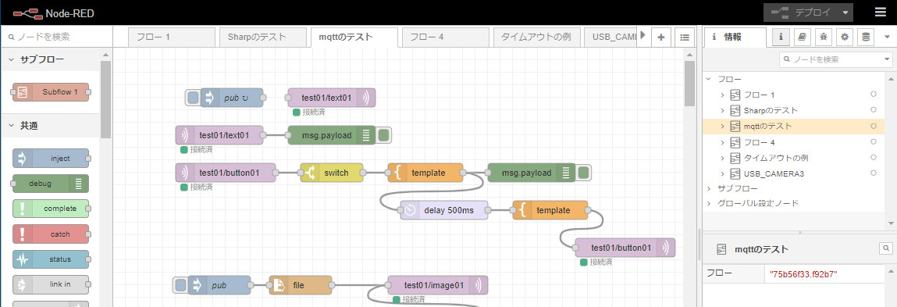

Node-REDは、ハードウェアデバイス／API／オンラインサービスなどを相互に接続するために、IBMによって開発されたビジュアルプログラミング開発ツールです。
2013年9月にオープンソース化されています。
オープンソースになってからも、"IBM Cloud"の スターターキットプリケーションの1つとしてNode-REDを活用しています。またIBMに限らず、NEC／富士通／日立／東芝などのIoTプラットホームでも活用されています。
"Raspberry Pi"にも標準でインストールされています。
IoTサービスであるenebularにおいてNode-REDが使われていますが、「Node-REDの概要について」の動画を作ってくれています。とても分かりやすい動画です。
また、もう少し詳しく知りたい方は、Node-RED User Group Japanの「概要」も参考になります。
その中で、
各ノードは何らかのデータを与えられ、そのデータで何かを実行し、 そのデータを渡すといった明確に定義された目的を持ちます。 ネットワークはノード間のデータの流れを示します。
とありますが、Node-REDを知る上でとても大事な内容だと思います。
色々なところで使われているNode-REDですが、特徴としては、
- Node.js上に構築されています。
- Node-REDやそのパッケージも、
npm install ・・・で簡単にインストールすることができます。 - インストール方法は、こちらをご覧ください。
- Node-REDやそのパッケージも、
- フローベースドプログラミングツールです。
- ノードを並べて接続していく感じです。
- 
- WEBブラウザ上で開発を行います。
- 特別な開発環境をインストールする必要はありません。ちなみに、上の図は"Google Chrome"でのGUIです。
自分が実現したい機能が驚くほど簡単に出来る場合が多いです。プロトタイプやPOC（概念実証）などを最小限の負荷でできます。処理速度や処理量が見合えば、本番で使っても良いのではないかと思います。
また、バージョン2.0以降、リンティングツールやデバッガーのプラグインが追加できるので、デバッグがかなりしやすくなりました。
とは言え、フローが複雑になるのであれば、他の言語（C#、Pythonなど）で実現した方がデバッグや保守が楽になるかもしれない、とも感じました。
最後に私がお世話になっているサイトを下にあげます。
- 本家
- 英語ですが、ブラウザの翻訳機能などを駆使すればなんとか理解できます。
- Node-RED User Group Japan の ドキュメント
- 本家の日本語版です。
- Node-RED Library
- Node-REDで利用できるパッケージを検索することができます。
- Node-RED User Group Japan の YouTubeチャンネル
- バージョン2.0の新機能の説明動画などもあります。（以前のバージョンの簡単な説明もしてくれています。勉強になります。）